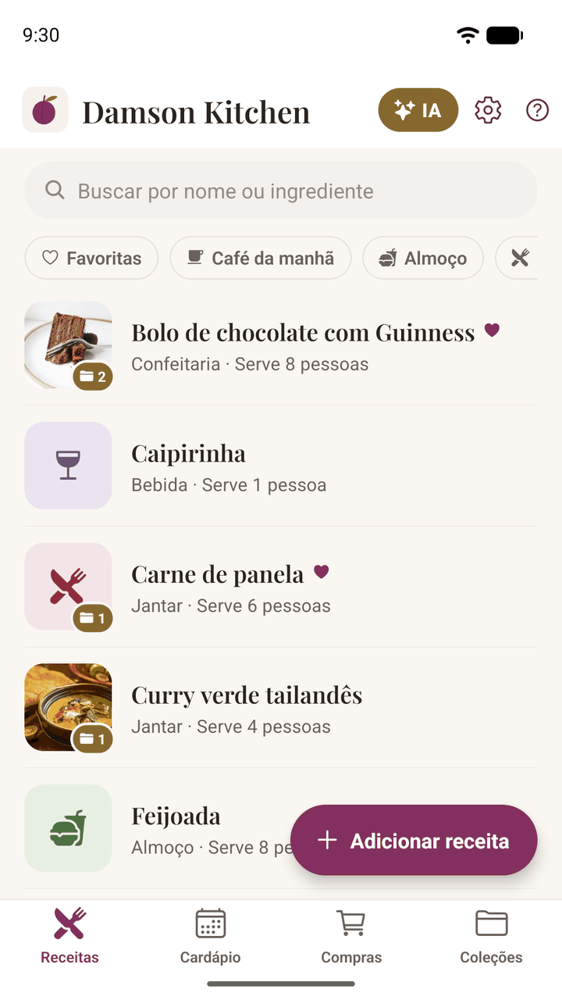
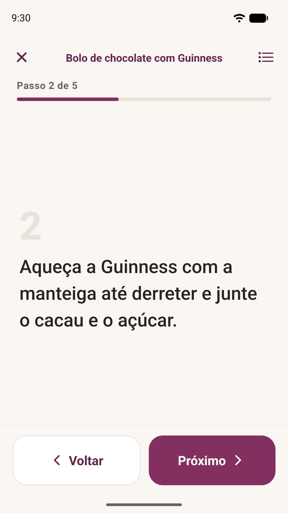
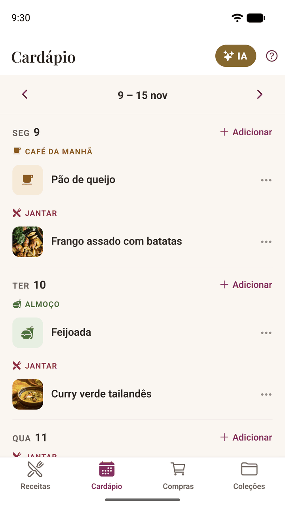
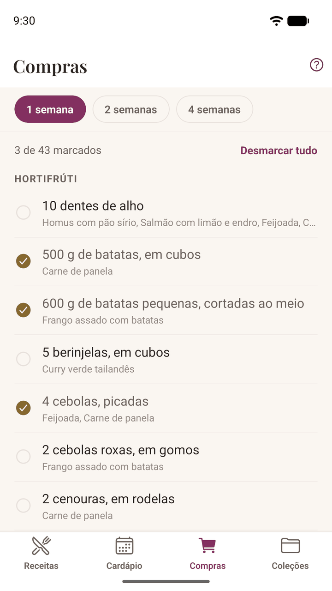
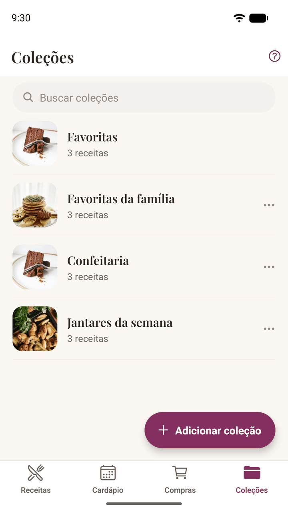

Adicionar receitas

Importar de um site ou de uma rede social
O jeito mais rápido é mandar a receita para o Damson Kitchen de onde você a encontrou. No navegador, no Instagram ou no seu app de notas, toque em Compartilhar e escolha Damson Kitchen. O app lê a página e preenche o título, os ingredientes e o modo de preparo para você revisar antes de salvar.
Você também pode tocar em IA no alto de Receitas e depois em Importar uma receita, que abre uma caixa onde colar diretamente um link ou o texto da receita.
Duas coisas que vale saber:
- Sempre dê uma olhada antes de salvar. As páginas de receitas são muito diferentes entre si, e o app é cauteloso de propósito: prefere deixar algo como ingrediente a errar e fazê-lo sumir sem avisar.
- As receitas importadas nunca trazem foto. É de propósito: a foto do site de outra pessoa pertence a quem a tirou. Em troca, você tem um link para a receita original, e pode adicionar a sua própria foto quando quiser.
Se o app não encontrou a receita numa página, ou só uma parte, Encontrar a receita com IA lê a página para você e abre a receita para você conferir. Faz parte do Damson Kitchen Premium: veja Importar uma receita com IA.
Escanear uma receita de uma foto
Escanear faz parte do Damson Kitchen Premium, com 7 dias de teste grátis. Se você tocar em Escanear de uma foto sem ele, verá o que o Premium inclui e quanto custa; nada é cobrado a menos que você escolha um plano no Google Play.
Muitas das receitas que mais valem a pena guardar não têm link nenhum: a página de um livro de receitas que você tem, uma ficha escrita à mão, uma foto que alguém da família te mandou. Toque em IA em Receitas, depois em Importar uma receita e em Escanear de uma foto, e tire uma foto ou escolha uma imagem que você já tenha salva.
O texto é lido no seu celular. Nada é enviado e nenhuma foto da sua receita sai do aparelho; justamente por isso ele lê letra à mão pior do que um serviço que mandasse suas fotos para outro lugar.
- Páginas impressas são bem lidas; letra cursiva, muitas vezes não. Se um escaneamento sair sem sentido, geralmente é por isso. Digitar é mais rápido do que brigar com ela.
- Receitas de duas páginas não são problema. Ao escanear de novo, o texto é adicionado ao que já está na caixa em vez de substituí-lo, então dá para fazer uma página depois da outra.
- Confira as quantidades antes de importar. Isto é o mais importante. Ao escanear, uma quantidade pode ser lida errado de um jeito que parece perfeitamente razoável, não claramente errado, e uma quantidade errada seria ajustada errado toda vez que você fizesse a receita. O texto sempre chega primeiro à caixa para você revisar: essa revisão é o objetivo, não uma formalidade.
Digitar uma receita direto
A mesma caixa aceita uma receita escrita do zero, o que para muita gente é mais natural do que preencher um formulário. Escreva como você faria no papel (o título, depois os ingredientes e depois o modo de preparo) e toque em Importar como está. O Damson Kitchen coloca cada coisa no seu lugar.
Nessa caixa há duas coisas que ajudam a acertar:
- Verificar ingredientes e preparo adiciona os títulos INGREDIENTES e MODO DE PREPARO onde acha que a receita se divide (ou INGREDIENTS e METHOD se a receita estiver em inglês). Não são enfeite: essas palavras são exatamente o que o app lê ao importar, então, se um título estiver no lugar errado, movê-lo move a divisão. Toque no botão de novo depois de uma mudança e os títulos se movem para combinar.
- As setas para cima e para baixo movem a linha onde está o cursor, o que te poupa de selecionar, recortar e colar para mudar uma linha de lugar: útil para um título que ficou uma linha alto demais ou um ingrediente que foi parar no meio dos passos.
Importar uma receita com IA
Importar com IA, embaixo da caixa de importação, transforma em ingredientes e modo de preparo o que estiver na caixa: uma página escaneada com as linhas fora de ordem ou quantidades lidas errado, uma legenda cheia de hashtags, anotações feitas às pressas ou um link. Faz parte do Damson Kitchen Premium.
- Só as palavras são enviadas. O texto da caixa vai para o Claude, uma IA da Anthropic, para ser colocado em ordem — nunca uma foto nem suas outras receitas — e nada fica guardado depois da resposta. Na primeira vez, o app explica isso e pergunta antes de enviar qualquer coisa. Mais na política de privacidade.
- Você confere e depois salva. A receita abre no editor, não direto na sua coleção. Leia tudo — principalmente as quantidades, as temperaturas do forno e o que importar para uma alergia — e corrija o que estiver errado antes de salvar. Voltar leva você de volta à caixa do jeito que você deixou.
- Ela organiza; não escreve. Não traduz a receita, não converte nem ajusta quantidades e não acrescenta nada que não estivesse no texto. Uma receita em inglês continua em inglês.
- Importar como está, ao lado, importa a caixa sem IA, como sempre.
Criar a sua
Toque em Adicionar receita e preencha o quanto quiser: só o título é obrigatório.
- Os ingredientes são escritos do jeito que você falaria: "2 xícaras (chá) de farinha", "3 ovos", "um punhado de salsinha". Por trás, o app entende a quantidade para poder ajustar a receita depois, e mostra o que entendeu em letra cinza embaixo da linha; toque nela para corrigir se ele errou.
- Quantidades vagas não são problema. "Sal a gosto" fica exatamente como você escreveu. Nada é inventado, e essa linha simplesmente não é ajustada.
- Os passos são reordenados arrastando o círculo com o número.
- Fotos: toque em + para fotografar o prato pronto ou escolher uma foto da galeria. A primeira foto é a capa; toque em qualquer outra para torná-la a capa.
Seções de ingredientes
Receitas com partes (uma massa e um recheio, um bolo e a cobertura) podem agrupar os ingredientes sob títulos. Ao importar, o app reconhece títulos como "Para o recheio" e já os prepara para você. Para adicionar um você mesmo, use a ação Seção acima da lista de ingredientes.
Excluir uma seção nunca apaga ingredientes sem perguntar. Se ela tiver algo dentro, o app oferece passar esses ingredientes para a seção ao lado. Na última seção que sobra, o controle vira Remover título, que volta a uma lista simples sem perder nada.
Cozinhar

Mudar o número de porções
Se uma receita diz para quantas pessoas serve, aparece um seletor acima dos ingredientes. Mude o número e todas as quantidades se ajustam, em frações de cozinha: você vê ¾ colher de chá em vez de 0,75. Toque no próprio número para digitá-lo em vez de apertar + várias vezes.
Isso nunca muda a receita. É só uma visualização, e as quantidades originais são sempre as que você salvou. Toque no aviso "Ajustada a partir de" para voltar.
Toque em qualquer ingrediente para marcá-lo conforme for separando. Essas marcas somem quando você sai da receita.
Modo cozinha
Toque em Cozinhar para ver um passo de cada vez em letra grande, feita para ser lida de longe e com as mãos sujas de farinha. Deslize ou use os botões largos para passar de um passo para outro, e abra a folha de baixo quando quiser para ver os ingredientes sem perder o lugar.
A tela não apaga enquanto o modo cozinha está aberto, e volta ao normal assim que você sai.
Se você ajustou as porções antes de tocar em Cozinhar, o modo cozinha também mostra as quantidades ajustadas.
Planejar a semana

O cardápio
A aba Cardápio mostra uma semana de cada vez, com café da manhã, almoço, jantar e lanche em cada dia. Escolha um dia, uma receita e a refeição a que ela pertence.
- As ocasiões são texto livre: "Almoço de domingo", "Aniversário da mãe". Os nomes que você já usou aparecem como sugestões.
- O número de pessoas fica na refeição, não na receita. O mesmo prato pode ser para quatro na terça e para doze numa festa. Deixe em branco para usar o que a receita diz.
- Ao abrir uma refeição do cardápio, ela já aparece ajustada para esse número de pessoas.
Você pode colocar a mesma receita duas vezes num dia, ou duas receitas na mesma refeição: nenhuma das duas coisas é considerada erro.
A lista de compras

A aba Compras se monta sozinha a partir do que você planejou, agrupada por seção do mercado para você não ficar indo e voltando entre os corredores. Escolha se quer cobrir a próxima semana, as próximas duas ou as próximas quatro.
- Começa de hoje, não de segunda. O que você já comeu não deveria te seguir pelo mercado.
- As quantidades são somadas quando dá. 200 g de farinha numa refeição e 150 g em outra viram 350 g.
- Unidades diferentes ficam em linhas separadas. "200 g de farinha" e "2 xícaras de farinha" não se juntam, porque converter direito entre elas é algo que o app ainda não faz, e um total inventado é pior do que duas linhas honestas.
- Funciona igual com receitas em português, inglês ou espanhol: "cebola" vai para Hortifrúti, e "onion" também.
- As marcas ficam salvas enquanto você compra, mesmo se fechar o app.
Cozinhar com IA
Toque em IA no alto de Receitas para ver tudo o que a IA pode fazer no Damson Kitchen. Faz parte do Damson Kitchen Premium, com 7 dias de teste grátis; nada é cobrado a menos que você escolha um plano no Google Play.
Mudar uma receita
Abra qualquer receita e toque em IA no alto: deixe-a vegetariana, sem glúten, mais picante ou mais rápida, ou peça que renda para mais gente. Toque numa sugestão ou escreva a sua. Você recebe uma cópia nova para conferir e salvar; a original continua exatamente como está.
O que posso fazer?
Diga o que você tem — "sobrecoxas de frango, um limão, meio saco de espinafre" — e qualquer outra coisa que importe: quanto tempo você tem, quem vai comer, uma alergia. Você recebe até três receitas; abra no editor a que gostar e salve.
Planejar um cardápio
Descreva a ocasião — "um jantar de aniversário para 10, um convidado vegetariano" — e receba um cardápio sob medida, com cada prato servindo o número de pessoas que você disse. Adicionar ao Cardápio salva as receitas e as coloca no dia e na refeição que você escolher, então o cardápio inteiro vai para a sua lista de compras. O botão IA da aba Cardápio leva direto para cá.
Falar em vez de digitar
Toque no microfone embaixo da caixa e diga o que quer; toque de novo quando terminar. Suas palavras aparecem na caixa para você conferir antes de enviar qualquer coisa. Ele usa o reconhecimento de voz do próprio celular, o mesmo do microfone do teclado, então o Damson Kitchen nunca recebe a gravação. Mais na política de privacidade.
Confira o que você recebe
- Nada é salvo até você salvar. Cada receita abre primeiro no editor, e um cardápio só é salvo quando você o adiciona ao Cardápio.
- A IA é uma ajuda, não uma conselheira. Ela respeita qualquer alergia ou dieta que você indicar, mas pode errar e nunca sabe o que há nos produtos que você compra. Confira cada receita, leia os rótulos e garanta que a comida esteja bem cozida.
- Limite. O teste grátis inclui 25 pedidos de IA, e o Premium até 100 por mês. Importar ou mudar uma receita conta como um, ideias como dois e um cardápio como três; escanear nunca conta. Configurações → Premium mostra quantos você já usou.
Organizar

Coleções
As coleções são grupos com nome: "Jantares da semana", "Natal", "O que as crianças comem de verdade". Uma receita pode estar em quantas você quiser. Adicione pela própria página da receita com o botão da pasta, ou crie coleções na aba Coleções.
Excluir uma coleção nunca exclui as receitas que estão nela.
Favoritas
Toque no coração de qualquer receita. Assim que você marcar alguma, aparece um filtro de Favoritas em Receitas e um grupo de Favoritas no começo de Coleções. Ele não pode ser renomeado nem excluído: desmarque o coração de uma receita para tirá-la.
Tipos de refeição e busca
Dê um tipo a uma receita (café da manhã, jantar, sobremesa, confeitaria etc.) e ela ganha o ícone e o filtro desse tipo. Só aparecem os tipos que você usou, para a fileira ficar curta.
A busca olha os ingredientes além dos títulos, então ao buscar "linguiça" você encontra as receitas que levam linguiça mesmo que ela não esteja no nome. A busca e os filtros por tipo funcionam juntos.
Anotações
Cada receita tem um campo de anotações para o que você escreveria na margem: "precisou de mais 10 minutos", "com metade do açúcar". As anotações são só suas e nunca vão junto com uma receita compartilhada.
Compartilhar uma receita
Abra uma receita e toque no ícone de compartilhar na barra de cima para enviá-la pelo menu de compartilhamento do seu celular: uma mensagem, um e-mail, o que você costuma usar. Nada é enviado para a nuvem e nenhum arquivo é criado. A mensagem é escrita no seu celular e passada direto para o app que você escolher.
O que é enviado depende de onde a receita veio:
| Receita | O que é enviado |
|---|---|
| Uma que você escreveu | A receita completa, como texto |
| Uma que você importou | O título e um link para a original |
A segunda linha é de propósito. Se a receita foi escrita por outra pessoa, o justo é apontar para a página dela em vez de copiar as palavras dela numa mensagem, para que o crédito continue sendo dela.
Ela vai como texto comum, então quem recebe pode ler normalmente, tendo o app ou não. Se a pessoa tiver o Damson Kitchen, a mensagem já está pronta para ser importada sem problemas. A mensagem vai no idioma da receita: uma receita em português é enviada com INGREDIENTES e MODO DE PREPARO mesmo que o seu celular esteja em inglês.
Backup e troca de celular
Como suas receitas ficam no seu celular e não nos nossos servidores, vale a pena separar um minuto para fazer um backup. E é o mesmo recurso que permite levar tudo para um celular novo.
Exportar
Vá em Configurações → Dados e backup → Exportar meus dados. O app junta todas as receitas, coleções, anotações, refeições do cardápio e fotos num único arquivo e o passa para o menu de compartilhamento. Guarde num lugar seu: o seu armazenamento na nuvem, um e-mail para você mesmo ou outro aparelho seu.
Esse arquivo nunca chega até nós. Ele é criado no seu celular e só vai para onde você mandar.
Guarde fora do celular: numa nuvem ou num e-mail para você mesmo. Um backup guardado só no próprio aparelho não sobrevive a uma restauração de fábrica nem à perda do celular, que são justamente as duas coisas de que ele te protege.
Em Configurações aparece a data do seu último backup, e quando você já tiver algumas receitas o app vai avisar discretamente se faz tempo desde o último e você mudou coisas desde então. O sinal é um pontinho no ícone de configurações; os detalhes ficam em Configurações.
Importar
No celular novo, instale o app, escolha Configurações → Dados e backup → Importar dados e selecione o arquivo. O app vai perguntar o que fazer com ele:
- Adicionar à biblioteca adiciona tudo o que está no arquivo junto ao que já existe. É a opção segura e a primeira oferecida.
- Substituir tudo apaga antes as receitas deste celular. Use ao preparar um celular novo quando quiser uma cópia exata.
Um backup feito com uma versão anterior do app sempre poderá ser importado.
A aparência, o idioma e o primeiro dia da semana não vão no arquivo: um backup leva as suas receitas, não as configurações do celular de onde veio.
Configurações
- Aparência: Claro, Escuro ou Sistema. Sistema segue o que o seu celular fizer, incluindo a programação dele.
- Idioma: Sistema, English, Español ou Português. Sistema segue o idioma do seu celular. Só muda as palavras do app: suas receitas ficam no idioma em que foram escritas, e o app lê receitas em português, inglês e espanhol seja qual for o idioma escolhido.
- A semana começa: segunda ou domingo, do jeito que você conta. O cardápio reorganiza a semana que você está vendo em vez de te levar para outra.
- Premium: se o Damson Kitchen Premium está ativo, quantos pedidos de IA você já usou e um acesso para gerenciar ou cancelar a assinatura no Google Play.
Solução de problemas
Uma importação chegou quase vazia
Algumas páginas não publicam a receita de um jeito que um app consiga ler, e algumas bloqueiam totalmente leitores automáticos. Normalmente a solução é você mesmo copiar o texto da receita: selecione, copie, toque em IA em Receitas, em Importar uma receita, e cole. Assim funciona com qualquer coisa que você consiga selecionar. Com o Premium, Encontrar a receita com IA, na tela do resultado, lê a página para você.
Ao compartilhar do TikTok só chega o link do vídeo
O TikTok compartilha o link sem a legenda, e a receita está na legenda. Copie o texto da legenda e cole na caixa de importação (IA → Importar uma receita). O app avisa quando detecta isso e diz a mesma coisa.
O Instagram não trouxe nada
Às vezes o Instagram mostra uma página de login em vez do post. Esperar um pouco e tentar de novo costuma funcionar; se não, copie a legenda e cole.
Minhas receitas não estão em português, inglês nem espanhol
O Damson Kitchen lê receitas em português, inglês e espanhol. O idioma importa porque o app não só mostra uma receita, ele a lê: entende que uma linha é um ingrediente, que "1½ xícara" é uma quantidade e uma unidade, e onde começa o modo de preparo. Tudo isso vai de idioma em idioma, então adicionar outro idioma significa ensinar o app a lê-lo, não só traduzir os botões.
Você pode escrever receitas em qualquer outro idioma: digite ou cole e elas ficam guardadas exatamente como você escreveu. O que ainda não vai funcionar é a parte automática: as quantidades não vão se ajustar e a lista de compras não vai conseguir somá-las.
Um escaneamento saiu sem sentido
Letra à mão costuma ser a resposta, principalmente a cursiva. O texto é lido no seu celular em vez de ser enviado para um serviço, o que mantém suas receitas particulares, mas significa que o que ele lê melhor é texto impresso e nítido. Ajuda uma foto mais reta e com mais luz, com a página ocupando todo o enquadramento; se não, digitar na mesma caixa é mais rápido do que corrigir linha por linha. Se o escaneamento está quase certo mas embaralhado — linhas fora de ordem, uma quantidade como “l50g” —, Importar com IA costuma resolver.
Uma receita escaneada tem ingredientes no meio dos passos
Use Verificar ingredientes e preparo na caixa de importação: ele marca onde o app acha que a receita se divide, para você ver antes de importar. Se um título estiver no lugar errado, coloque o cursor nessa linha e use as setas para movê-la: a importação segue os títulos. O que continuar fora do lugar pode ser movido depois no editor, onde cada ingrediente tem um botão para movê-lo e os passos têm o contrário.
A foto de uma receita sumiu
As fotos são arquivos do seu celular, então um app de limpeza ou uma exclusão manual podem apagá-las. A receita não é afetada: ela mostra no lugar o ícone do tipo de refeição ou a sua inicial, e você pode adicionar uma foto nova quando quiser. É um bom motivo para exportar de vez em quando.
Uma quantidade não se ajustou
Só se ajustam as quantidades que o app conseguiu ler. "Sal a gosto" não tem nenhum número para multiplicar, então aparece exatamente como você escreveu. Se uma linha deveria ter sido entendida, toque na interpretação em cinza que aparece embaixo dela no editor e corrija.
Uns ingredientes viraram passo, ou um título virou ingrediente
A importação se baseia no formato do texto, e algumas páginas são realmente ambíguas. Tudo pode ser editado depois de importar: toque em Editar e mova a linha para o lugar certo.
O Premium não mostra preços
Os preços vêm do Google Play, então o celular precisa estar conectado e com a conta da Play Store. Se estiver, feche o app e abra de novo. Se o Damson Kitchen não foi instalado pelo Google Play, ele não consegue comprar assinaturas.
A IA diz que usei meus pedidos
O teste grátis inclui 25 pedidos de IA, e o Premium até 100 por mês; o limite mensal recomeça no dia 1º. Ideias de receitas contam como dois pedidos e um cardápio como três, então gastam o limite mais rápido. Todo o resto, inclusive escanear e importar sem IA, continua funcionando normalmente.
O botão do microfone não aparece
Ele só aparece quando o celular tem reconhecimento de voz disponível. Se não tiver, o microfone do teclado faz o mesmo. Se o app disser que não consegue ouvir você, confira se ele tem permissão para usar o microfone nas configurações do celular, em Apps → Damson Kitchen → Permissões.
Ainda com dúvida?
Preferimos que você nos conte a que fique brigando com o app. No app, abra Configurações → Pedir ajuda: abre um e-mail com a versão do app e o modelo do seu celular já preenchidos, o que costuma poupar uma rodada de perguntas. Esses dados vão no corpo da mensagem, então você pode lê-los e apagar o que preferir não enviar.
E-mail: support@zayvori.com
Pode escrever em português. Se uma importação falhar, dizer de qual página você estava importando ajuda muito: costuma ser o caminho mais rápido para uma correção que sirva para todo mundo.